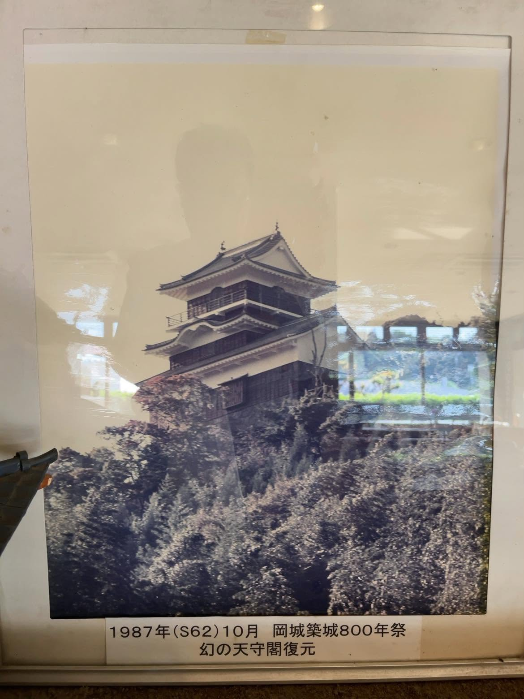
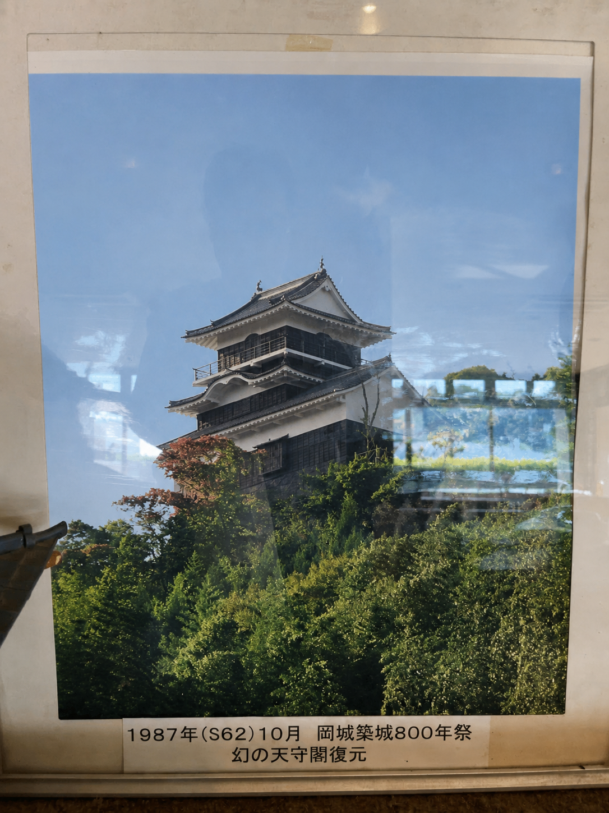
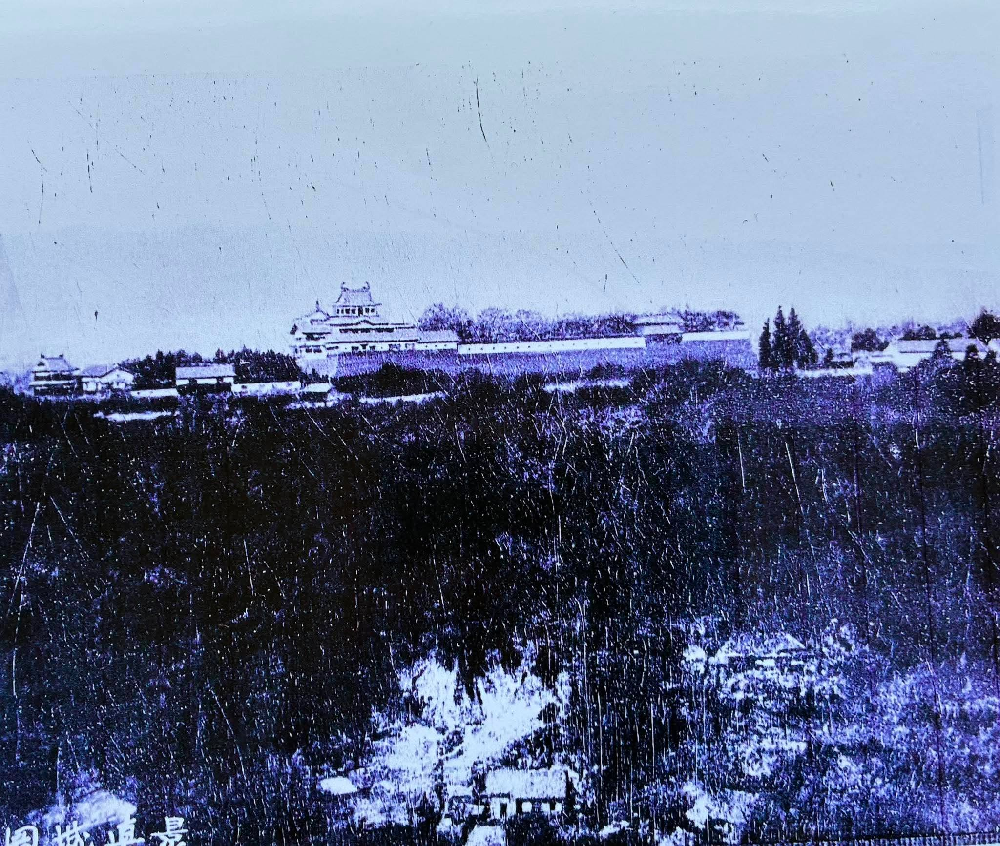
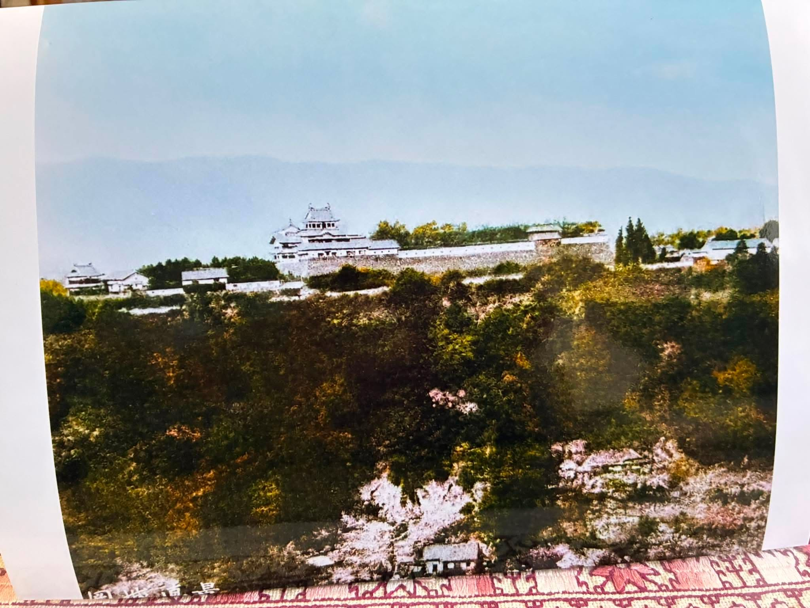

母のふるさと
父が出会うずっと前、
母は岡城のふもとで育ちました。
岡城の天守から石を投げたら届くほど近い場所に
屋敷があったと伝わっています。
画像にマウスを重ねると、 岡城の当時の風景が少しだけ色を取り戻します。
母が過ごしたころにはなかった岡城天守閣
岡城には、かつて天守にあたる御三階櫓がありました。 明治の廃城により失われました。 母が過ごしていた時代にはすでに天守閣はなかったはずです。 1987年の築城800年祭では、 わずか20日間だけ幻の天守閣がよみがえりました。 この写真は、その時の貴重な記録です。


1987年の岡城築城800年祭
カラー化した幻の天守閣復元
母と一緒に見た岡城遠景写真
母は大分県豊後大野市朝地の出身で、もともとのおうちは、現在は石垣だけが残る岡城 のすぐ近くに屋敷があり、 「天守から石を投げたら当たるくらい近かった」 と家族には伝わっています。
ちなみに、 石垣だけとなった岡城址を見て 滝廉太郎が作曲した曲が 『荒城の月』です。
岡城として天守閣がある状態は、
両親とも見たことがありませんでした。
両親と一緒に岩城屋旅館に宿泊した際、
この写真が飾られているのを見て、
「岡城の天守閣の様子は、
絵でしか見たことがなかった」
と二人とも驚いていました。
絵は今でも実家の和室に飾ってあります。


岩城屋にあったかつての岡城の写真
若い頃の母
当時の母は地元でも評判の美人だったそうです。
ピアノを弾き、
ギターを担いで汽車に飛び乗る。
そんな女学生だったそうです。
本人は派手なことが嫌いですが、
周囲から見ると当時は珍しいとても目立つ存在だったようです。
同じ竹田高校ですが勉強ばかりしていた父にとっては、
高嶺の花だったようです。
東京へ
岡城のふもとで育った母は、やがて仕事のため東京へ出ました。 父もまた、仕事のため東京へ出ていました。 竹田では接点のなかった二人でしたが、東京で縁をつないでくれる人が現れ、お見合いをすることになりました。
父と出会う
当時の母は地元でも評判の美人で、父にとっては高嶺の花だったそうです。 まさか自分がお見合いをすることになるとは、父も思っていなかったかもしれません。 そして、この写真がお見合いのときの母です。
母親になった母
神奈川県相模原市で公営団地が当たって当時大喜びした両親。そこで自分が生まれました。 その後、藤沢市で一軒家を建て、そこで母は自分を育ててくれました。今の実家です。
父と母
母は岡城の武家の家系の出身でした。
一方、父の実家は小庄屋の家でした。
普段は穏やかな母でしたが、
夫婦喧嘩になると、
「常識だろう！百姓！」
と父を叱ってました。
父は決して母に逆らえませんでした。
今では親戚の笑い話ですが、
父にとっては、
本当の話だったと今でも苦笑いしています。
このサイトは、
2025年6月に事故で急逝した母を偲び、
家族の思い出を残すために作りました。
父が最初に出会った頃の母に、 もう一度会えるように。
あの頃へ少しだけ戻るための入口へ戻る
あの頃へ少しだけ戻るための入口へ